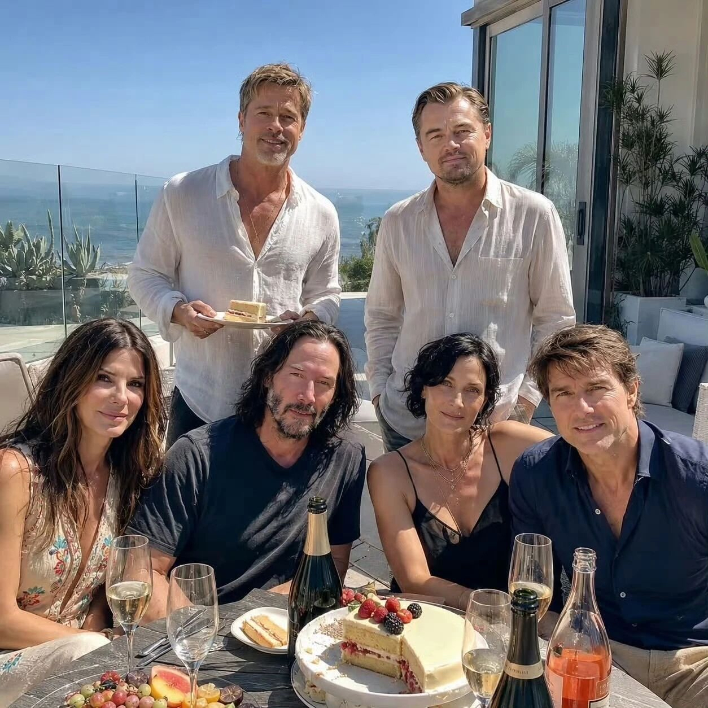

话题起源
给 8 个模型的原始提问（一字未改）
"不受限制，以任意的方式、从任意的角度，有创意地介绍、解读这张照片及照片里的人物"
这不是一次普通的"看图解图"，而是一个两轮对照实验：第一轮——同一张图、同一个开放提问，交给 8 个模型自由作答，得到 8 份风格迥异的答卷（AI-1 ~ AI-8）；第二轮——把 8 份答卷隐去品牌，再交给 5 个模型反推"谁写的谁"，得到 5 份归因分析（wbd / ChatGPT / Doubao / Gemini / Qwen）。
答案揭晓后，40 次品牌归因只命中 11 次。这一页就是把 5 份分析交叉汇总后的结果：哪些"风格指纹"真的有效，哪些只是我们共有的先验偏见。
- ①一图一问
- ②八份答卷
- ③五份归因分析
- ④揭晓真实出处
- ⑤本页交叉汇总

IMG_5302.JPG —— 一张由扩散模型生成的"好莱坞六巨星海边聚会"合成图。后排站立者酷似布拉德·皮特（端着蛋糕）与莱昂纳多·迪卡普里奥；前排就坐者依次酷似桑德拉·布洛克、基努·里维斯、凯莉-安·莫斯与汤姆·克鲁斯。
它是假的，但破绽不在脸上，而在物理里：
- 香槟瓶身无标、瓶口多出一圈畸形玻璃环
- 酒杯折射错误：空杯里"装着"一副刀叉
- 桌上蛋糕是楔形缺口，被端走的却是一块长方"三明治"
- 手指与盘沿、刀叉柄部互相粘连
- 六人全部直视镜头，彼此之间没有任何眼神交流
八份答卷 · 特点与思路
卡片按 AI-1 ~ AI-8 排列，角标为真实出处。点击卡片展开：事实表现、潜在思路原则、以及 5 份分析分别把它猜成了谁。可用下方筛选快速定位。
口径
归因矩阵 · 5 份分析 × 8 份答卷
行 = 做归因的分析文件（后缀即其出处），列 = 8 份答卷（真实品牌已标注）。绿底 = 猜中，灰底 = 猜错；紫色描边 = 该分析认领了自己的答卷。鼠标悬停看理由，点击可高亮。
命中分布
左：每份分析猜对几个；右：每份答卷被几份分析认出。右侧的断层最说明问题——被认出的都是"行为签名型"，认不出的都是"文风型"。
六条关键发现
交叉 5 份分析后最值得记住的结论。
思路原则 · 点击高亮相关答卷
8 份答卷背后可归纳的生成策略。点击任一原则，上方卡片区会只保留与之相关的答卷。